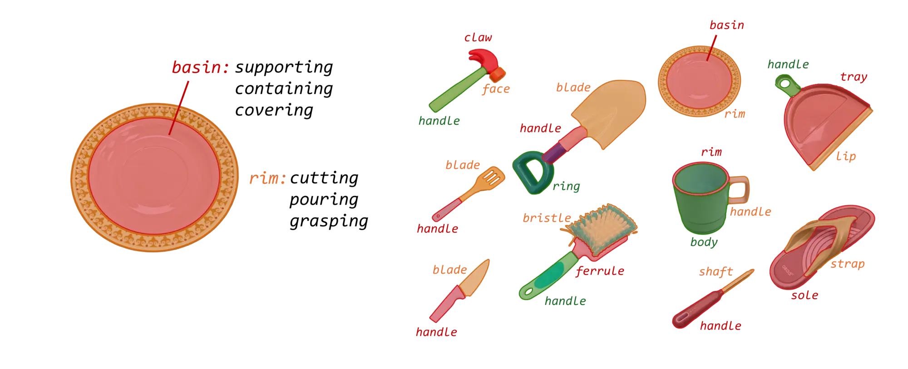
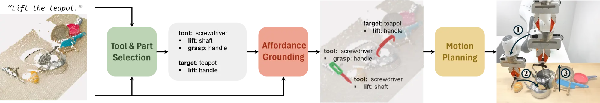
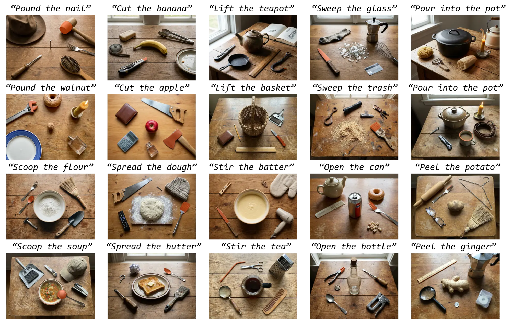

Can the robot use a plate to cut a cake if no knife is available? Tool use greatly expands robot capabilities, but using everyday objects as improvised tools requires robots to address the challenge of open-world affordance grounding: selecting an open-category object to act as a tool and localizing its specific region of action. To this end, we introduce GROW2 (GROunding Which and Where), which leverages object parts as a natural abstraction to split the grounding process hierarchically into semantic and geometric levels, thus bypassing the need for data-heavy, end-to-end training. Semantically, GROW2 harnesses the commonsense reasoning of Vision-Language Models (VLMs) to parse a natural-language task instruction, select a suitable object as the tool, and identify task-relevant parts on the tool and the target object. Geometrically, vision foundation models then ground the selected parts into precise 3D regions from a single RGB-D image. Experiments on established benchmarks show that GROW2 outperforms state-of-the-art baselines on affordance prediction benchmarks. Further, it achieves zero-shot generalization over open-category objects and outperforms baselines in both simulated and real-world robot tool use experiments.
Object parts, such as a blade, rim, and tip, provide a useful abstraction that captures both affordance semantics and the corresponding geometric structure. Using parts as an intermediate representation, we can decompose affordance grounding into semantic and geometric levels. This decomposition eliminates dependence on large-scale affordance annotations and lets GROW2 generalize to open-category objects.

GROW2 overview. Given a task description and a single-view RGB-D observation, GROW2 first performs tool and part selection in semantic space to identify the tool and target objects along with their task-relevant parts. It then detects and grounds these parts into complete, function-faithful 3D affordance regions. Finally, the affordance regions serve as priors for motion planning to generate low-level actions for robot execution.

Each example shows the robot manipulation video on top and the corresponding grounded 3D affordance regions below.
Manipulation
Affordance
Manipulation
Affordance
Manipulation
Affordance
Manipulation
Affordance
Manipulation
Affordance
GROW2 effectively grounds open-world affordances and generalizes to novel objects and broad tasks. Task-relevant affordance regions are highlighted in red.

@article{deng2026grow2,
title = {{GROW$^2$}: Grounding Which and Where for Robot Tool Use},
author = {Yuhong Deng and Yuyao Liu and David Hsu},
journal = {arXiv preprint arXiv:2606.30632},
year = {2026},
}